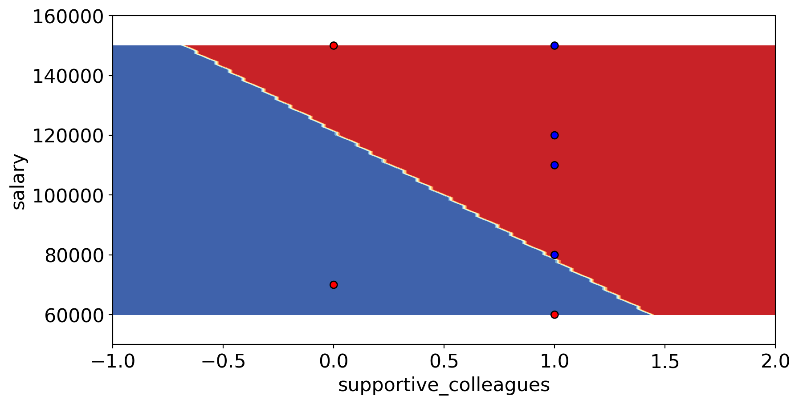
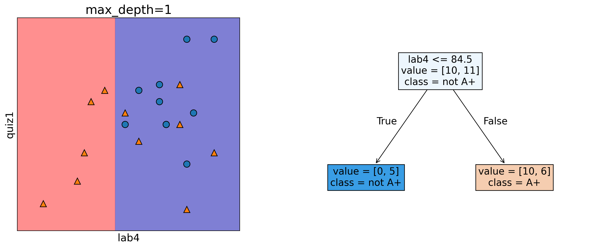
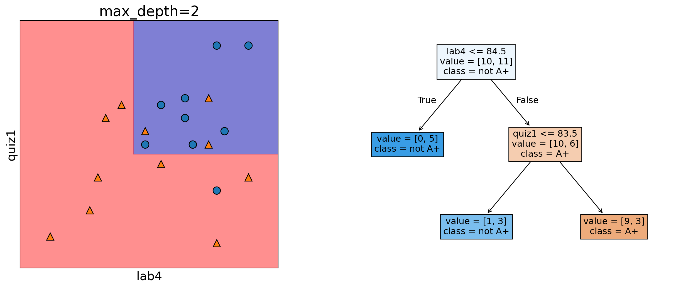
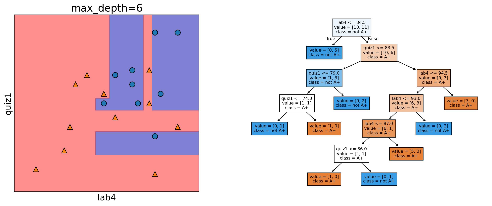
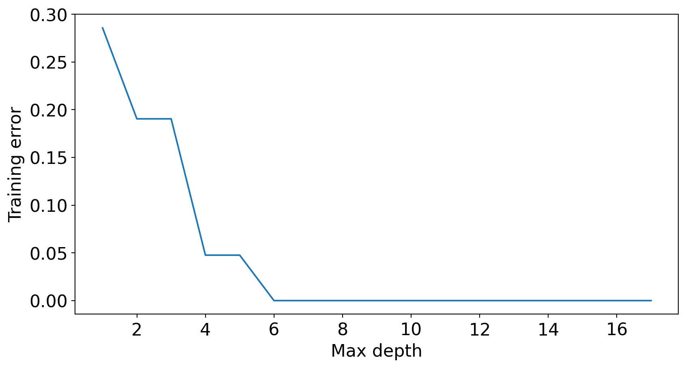
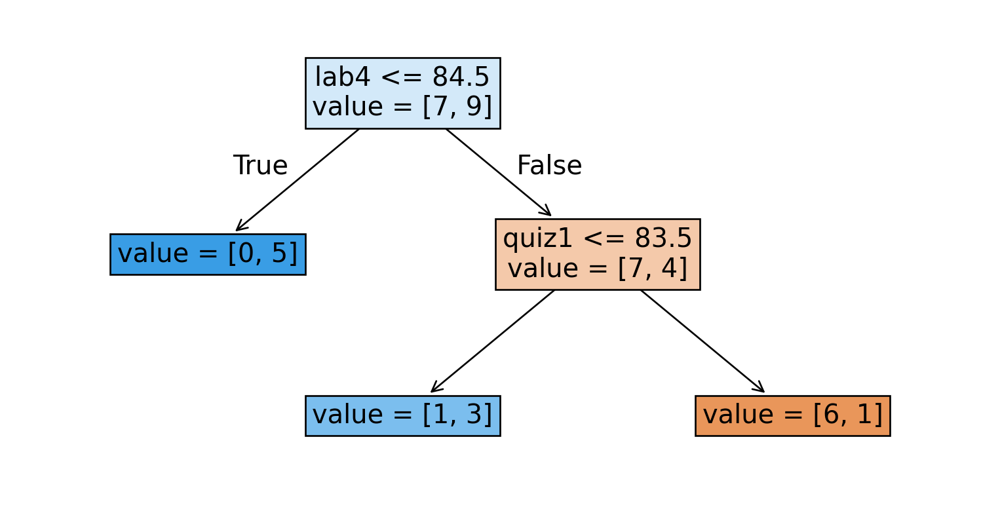
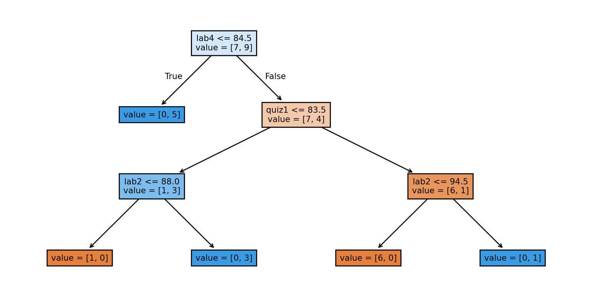
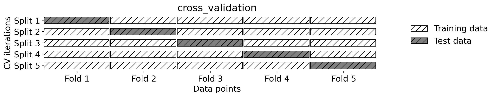

CPSC 330 Lecture 3: ML fundamentals
Andrew Roth (Slides adapted from Varada Kolhatkar and Firas Moosvi)
Announcements
- Homework 2 (hw2) (Due: Jan 20, 11:59pm)
- You are welcome to broadly discuss it with your classmates but final answers and submissions must be your own.
- Group submissions are not allowed for this assignment.
- Advice on keeping up with the material
- Practice!
- Make sure you run the lecture notes on your laptop and experiment with the code.
- Start early on homework assignments.
- If you are still on the waitlist, it’s your responsibility to keep up with the material and submit assignments.
- Last day to drop without a W standing: Jan 17
Learning outcomes
From this lecture, you will be able to
- Explain how decision boundaries change with the
max_depthhyperparameter and this relates to model complexity - Explain the concept of generalization
- Explain how and why we split data for training
- Describe the fundamental tradeoff between training score and the train-test gap
- State the golden rule
Big picture
In machine learning we want to learn a mapping function from labeled data so that we can predict labels of unlabeled data.
For example, suppose we want to build a spam filtering system. We will take a large number of spam/non-spam messages from the past, learn patterns associated with spam/non-spam from them, and predict whether a new incoming message in someone’s inbox is spam or non-spam based on these patterns.
So we want to learn from the past but ultimately we want to apply it on the future email messages.
Review of decision boundaries
Select the TRUE statement.
- The decision boundary in the image below could come from a decision tree.
- The decision boundary in the image below could not come from a decision tree.
- There is not enough information to determine if a decision tree could create this boundary.
Generalization
Running example
| ml_experience | class_attendance | lab1 | lab2 | lab3 | lab4 | quiz1 | quiz2 | |
|---|---|---|---|---|---|---|---|---|
| 0 | 1 | 1 | 92 | 93 | 84 | 91 | 92 | A+ |
| 1 | 1 | 0 | 94 | 90 | 80 | 83 | 91 | not A+ |
| 2 | 0 | 0 | 78 | 85 | 83 | 80 | 80 | not A+ |
| 3 | 0 | 1 | 91 | 94 | 92 | 91 | 89 | A+ |
Setup
Depth = 1

Depth = 2

Depth = 6

Complex models decrease training error

Question
- How to pick the best depth?
- How can we make sure that the model we have built would do reasonably well on new data in the wild when it’s deployed?
- Which of the following rules learned by the decision tree algorithm are likely to generalize better to new data?
Rule 1: If class_attendance == 1 then grade is A+.
Rule 2: If lab3 > 83.5 and quiz1 <= 83.5 and lab2 <= 88 then quiz2 grade is A+
Think about these questions on your own or discuss them with your friend/neighbour.
Generalization: Fundamental goal of ML
To generalize beyond what we see in the training examples
We only have access to limited amount of training data and we want to learn a mapping function which would predict targets reasonably well for examples beyond this training data.
Generalizing to unseen data
- What prediction would you expect for each image?
Training error vs. Generalization error
- Given a model \(M\), in ML, people usually talk about two kinds of errors of \(M\).
- Error on the training data: \(error_{training}(M)\)
- Error on the entire distribution \(D\) of data: \(error_{D}(M)\)
- We are interested in the error on the entire distribution
… But we do not have access to the entire distribution 😞
Data splitting
How to approximate generalization error?
A common way is data splitting.
- Keep aside some randomly selected portion from the training data.
fit(train) a model on the training portion only.score(assess) the trained model on this set aside data to get a sense of how well the model would be able to generalize.- Pretend that the kept aside data is representative of the real distribution \(D\) of data.
Train/test split

train_test_split
| Data portion | Shape |
|---|---|
| X | (21, 7) |
| y | (21,) |
| X_train | (16, 7) |
| y_train | (16,) |
| X_test | (5, 7) |
| y_test | (5,) |
Training vs test error (max_depth=2)

Train error: 0.125
Test error: 0.400Training vs test error (max_depth=6)

Train error: 0.000
Test error: 0.600Train/validation/test split
- Sometimes it’s a good idea to have a separate data for hyperparameter tuning.

Summary of train, validation, test, and deployment data
fit |
score |
predict |
|
|---|---|---|---|
| Train | ✔️ | ✔️ | ✔️ |
| Validation | ✔️ | ✔️ | |
| Test | once | once | |
| Deployment | ✔️ |
You can typically expect \(E_{train} < E_{validation} < E_{test} < E_{deployment}\).
iClicker 3.1
iClicker cloud join link: https://join.iclicker.com/HTRZ
Select all of the following statements which are TRUE.
- A decision tree model with no depth (the default
max_depthinsklearn) is likely to perform very well on the deployment data.
- A decision tree model with no depth (the default
- Data splitting helps us assess how well our model would generalize.
- Deployment data is scored only once.
- Validation data could be used for hyperparameter optimization.
- It’s recommended that data be shuffled before splitting it into train and test sets.
Cross validation
Problems with single train/validation split
- If your dataset is small you might end up with a tiny training and/or validation set.
- You might be unlucky with your splits such that they don’t align well or don’t well represent your test data.
Cross-validation to the rescue!!
- Split the data into \(k\) folds (\(k>2\), often \(k=10\)). In the picture below \(k=4\).
- Each “fold” gets a turn at being the validation set.

Cross-validation using scikit-learn
from sklearn.model_selection import cross_val_score, cross_validate
model = DecisionTreeClassifier(max_depth=4)
cv_scores = cross_val_score(model, X_train, y_train, cv=4)
cv_scoresarray([0.5 , 0.75, 0.5 , 0.75])Average cross-validation score = 0.62
Standard deviation of cross-validation score = 0.12Under the hood
- Cross-validation doesn’t shuffle the data; it’s done in
train_test_split.

Our typical supervised learning set up is as follows:
- We are given training data with features
Xand targety - We split the data into train and test portions:
X_train, y_train, X_test, y_test - We carry out hyperparameter optimization using cross-validation on the train portion:
X_trainandy_train. - We assess our best performing model on the test portion:
X_testandy_test.
- What we care about is the test error, which tells us how well our model can be generalized.
The golden rule
Types of errors
Imagine that your train and validation errors do not align with each other. How do you diagnose the problem?
We’re going to think about 4 types of errors:
- \(E_\textrm{train}\) is your training error (or mean train error from cross-validation).
- \(E_\textrm{valid}\) is your validation error (or mean validation error from cross-validation).
- \(E_\textrm{test}\) is your test error.
- \(E_\textrm{best}\) is the best possible error you could get for a given problem.
Underfitting
Train error: 0.229
Validation error: 0.438Overfitting
Train error: 0.000
Validation error: 0.438The “fundamental tradeoff” of supervised learning:
As you increase model complexity, \(E_\textrm{train}\) tends to go down but \(E_\textrm{valid}-E_\textrm{train}\) tends to go up.
Bias vs variance tradeoff
- The fundamental trade-off is also called the bias/variance tradeoff in supervised machine learning.
- Bias
- the tendency to consistently learn the same wrong thing (high bias corresponds to underfitting)
- Variance
- the tendency to learn random things irrespective of the real signal (high variance corresponds to overfitting)
How to pick a model that would generalize better?
- We want to avoid both underfitting and overfitting.
- We want to be consistent with the training data but we don’t to rely too much on it.

There are many subtleties here and there is no perfect answer but a common practice is to pick the model with minimum cross-validation error.
The golden rule
- Even though we care the most about test error THE TEST DATA CANNOT INFLUENCE THE TRAINING PHASE IN ANY WAY.
- We have to be very careful not to violate it while developing our ML pipeline.
- Even experts end up breaking it sometimes which leads to misleading results and lack of generalization on the real data.
Here is the workflow we’ll generally follow.
Splitting: Before doing anything, split the data
XandyintoX_train,X_test,y_train,y_testortrain_dfandtest_dfusingtrain_test_split.Select the best model using cross-validation: Use
cross_validatewithreturn_train_score = Trueso that we can get access to training scores in each fold. (If we want to plot train vs validation error plots, for instance.)Scoring on test data: Finally score on the test data with the chosen hyperparameters to examine the generalization performance.
Again, there are many subtleties here we’ll discuss the golden rule multiple times throughout the course.
iClicker 3.2
iClicker cloud join link: https://join.iclicker.com/HTRZ
Select all of the following statements which are TRUE.
- \(k\)-fold cross-validation calls fit \(k\) times
- We use cross-validation to get a more robust estimate of model performance.
- If the mean train accuracy is much higher than the mean cross-validation accuracy it’s likely to be a case of overfitting.
- The fundamental tradeoff of ML states that as training error goes down, validation error goes up.
- A decision stump on a complicated classification problem is likely to underfit.
What we learned today?
- Importance of generalization in supervised machine learning
- Data splitting as a way to approximate generalization error
- Train, test, validation, deployment data
- Cross-validation
- Overfitting, underfitting, the fundamental tradeoff, and the golden rule.
Class demo (Time permitting)
Copy this notebook to your working directory and follow along.